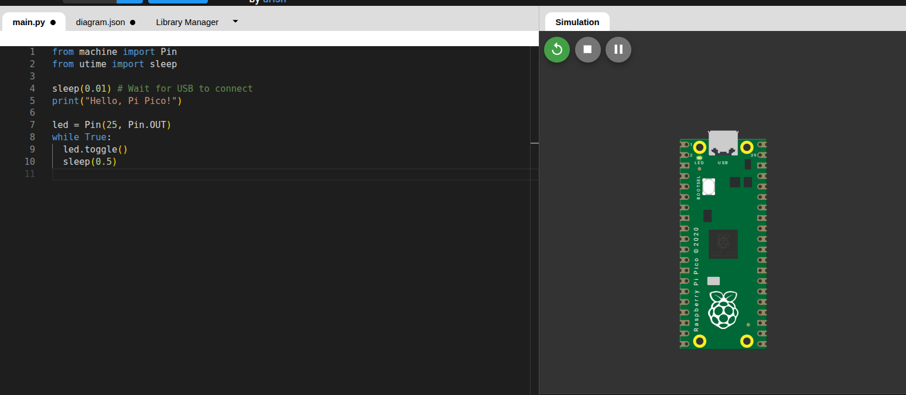

This module introduces Python programming on the Raspberry Pi Pico using MicroPython. Students learn how to install the Thonny IDE, write simple scripts, and blink onboard LEDs.
Here is a Wokwi simulation showing the LED blinking setup:
Below is the code used to blink the onboard LED of the Raspberry Pi Pico:
from machine import Pin
from time import sleep
led = Pin(25, Pin.OUT)
while True:
led.toggle()
sleep(0.5)
Watch this video showing the LED blinking after uploading the MicroPython code: